Great Symphonies
Haydn | Symphony No. 94 “Surprise”
Haydn | Symphony No. 104 “London”
Haydn | Symphony No. 101 “Clock”
Haydn | Symphony No. 92 “Oxford”
Haydn : Symphony No. 94 in G major, “Surprise”
Download PDF
Movement I, Melody A
Movement I, Melody B
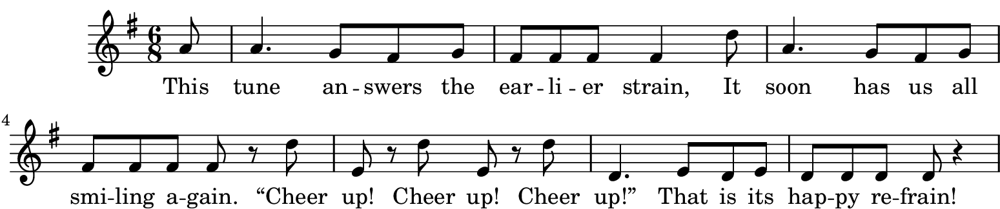
Movement II
Movement III
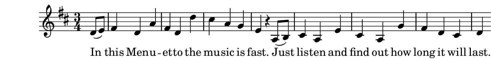
Movement IV
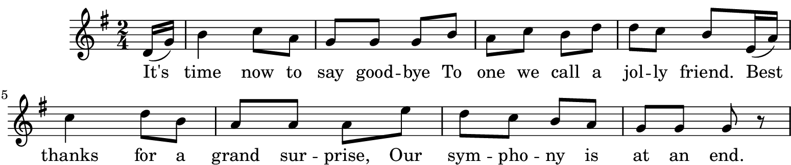
Haydn : Symphony No. 104 in D major, “London”
Download PDF
Movement I, Melody A
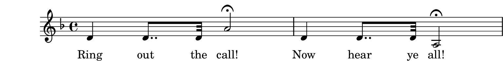
Movement I, Melody B
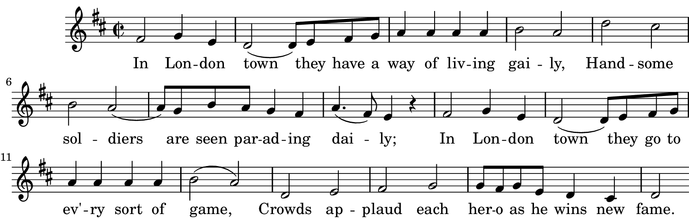
Movement I, Melody C
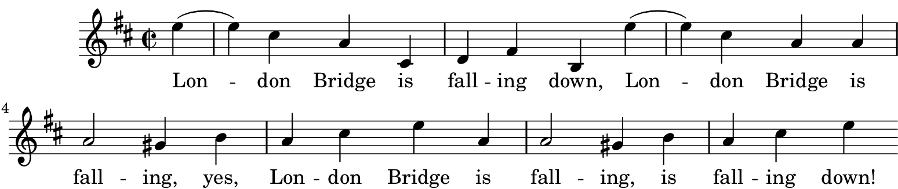
Movement II
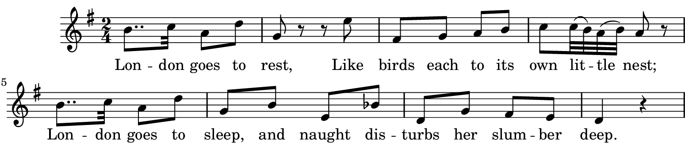
Movement III: Melody A
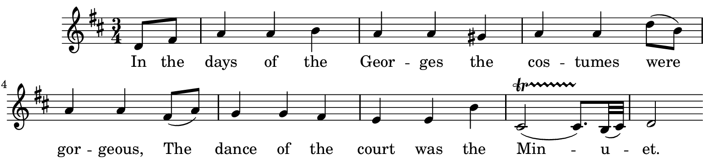
Movement III: Melody B
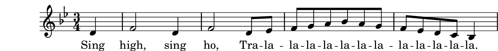
Movement IV: Melody A
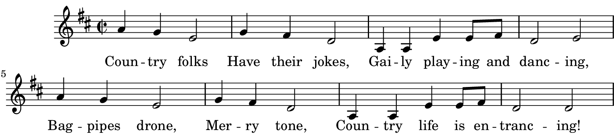
Movement IV: Countermelody
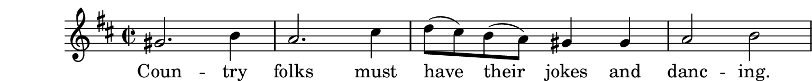
Haydn : Symphony No. 101 in D major, “Clock”
Download PDF
Movement I, Melody A
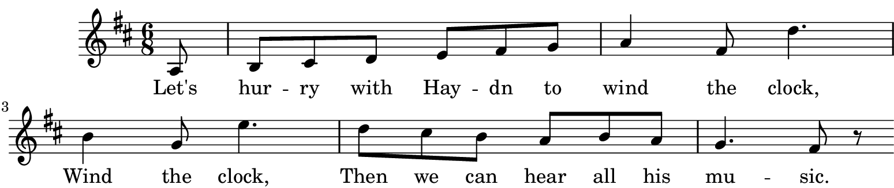
Movement I, Melody B
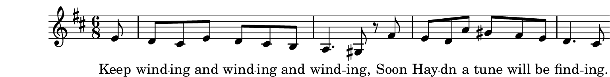
Movement II
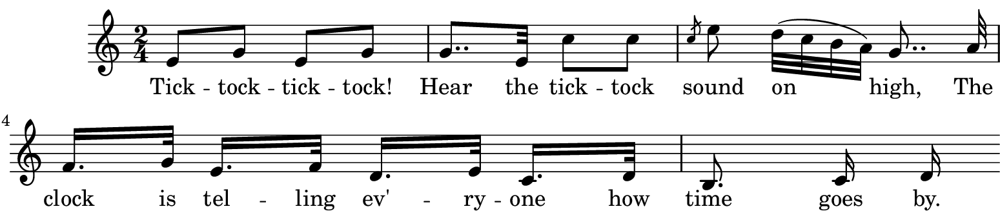
Movement III
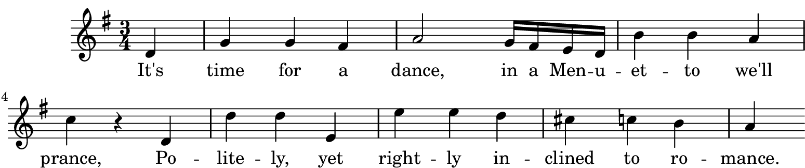
Movement III: Whistling
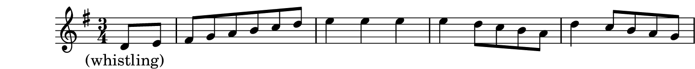
Movement IV: Melody A
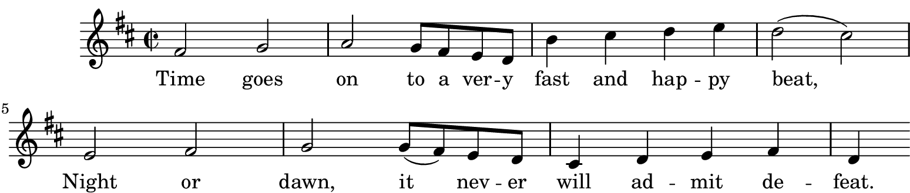
Movement IV: Melody B
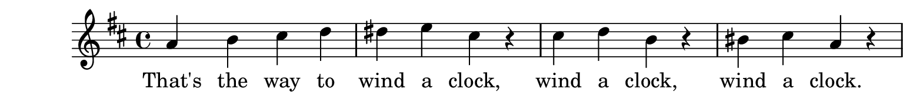
Haydn : Symphony No. 92 in G major, “Oxford”
Download PDF
Movement I, Melody A
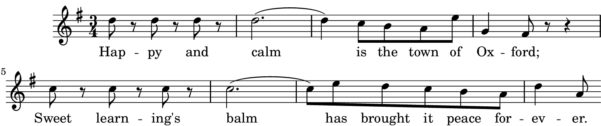
Movement I, Melody B
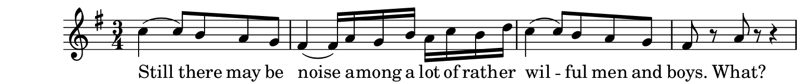
Movement I, Melody C
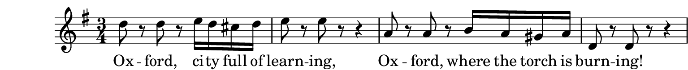
Movement II
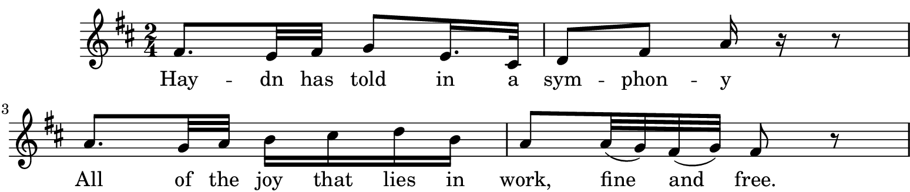
Movement III
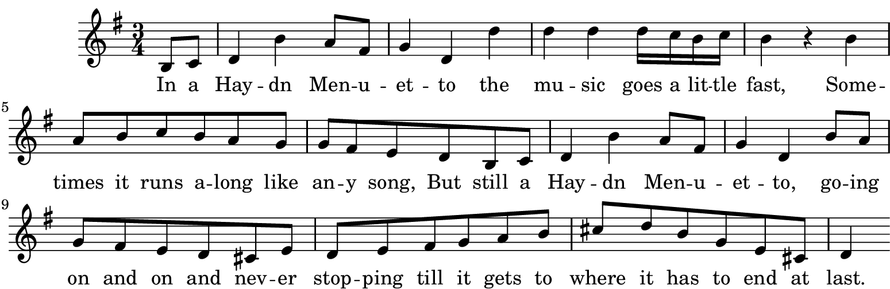
Movement IV
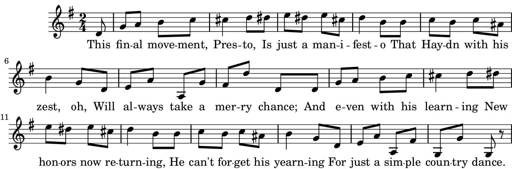